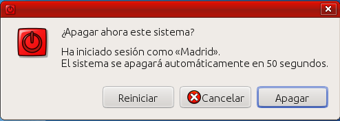

El gestor de entrada (lightdm) y el entorno de escritorio
Lightdm es la interfaz gráfica de "login" o identificación. Desde esta ventana, usted podrá elegir con qué usuario iniciará la sesión y el entorno gráfico a utilizar, GNOME o XFCE.
Para acceder con uno de los usuarios establecidos en el sistema, desplace la caja de selección con las flechas del cursor o pinche con el ratón sobre el nombre del usuario deseado, a continuación escriba su contraseña en el espacio destinado para ello y pulse la tecla "Enter".

Si antes de pulsar la tecla "Enter" para acceder a la sesión del usuario seleccionado, pulsa sobre el botón blanco con la huella (icono de GNOME) podrá seleccionar el entorno de escritorio para las próximas sesiones, hasta que vuelva a cambiarse la selección. Las opciones son:
- GNOME Flashback. GNOME es un entorno de escritorio muy completo y configurable, pero necesita muchos recursos del equipo para funcionar correctamente. La versión Flashback elegida por MAX es la que mantiene un aspecto más parecido a las versiones clásicas de GNOME. Se recomienda para ordenadores con procesadores modernos y al menos 2 Gb de memoria RAM.
- Sesión de Xfce. Xfce es un entorno de escritorio algo menos completo y configurable que GNOME, pero sí lo suficiente. Además consume muy pocos recursos y por eso se recomienda para equipos menos potentes; aunque, por supuesto, puede emplearse en cualquier ordenador.
Puede cambiar de entorno siempre que quiera, encontrará las mismas aplicaciones y seguirá teniendo sus documentos en los mismos lugares. Sólo cambia el aspecto gráfico y unas pocas cuestiones de usabilidad que a unas personas les gustan más que a otras.
Este es el aspecto general del entorno GNOME:

Y este es el aspecto general del entorno Xfce:
Por ejemplo, las formas de salir de la sesión, apagar o reiniciar son ligeramente diferentes en los dos entornos:
El entorno GNOME ofrece las siguientes opciones en el menú principal:
- "Apagar" hace aparecer una nueva ventana con las posibilidades de apagar, reiniciar o cancelar y no hacer nada:

- "Bloquear la pantalla", pone inmediatamente la pantalla del equipo en negro, y al querer acceder nuevo pregunta la contraseña del usuario:

- "Cerrar la sesión" pone en marcha el proceso de cerrar en 1 minuto, aunque puede tanto cancelarse como hacer que la orden se ejecute inmediatamente. Cerrar la sesión consiste en devolver el equipo a la pantalla del gestor de entrada lightdm.

El entorno Xfce, por su parte, presenta menos opciones en el menú:

De hecho, las dos entradas abren una nueva ventana con todas las opciones disponibles, Salir, Reiniciar, Apagar, Suspender e Hibernar: